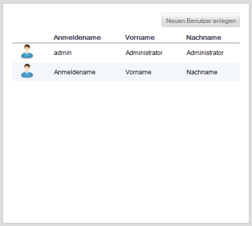

Benutzerverwaltung
Benutzer, welche sich an der Anwendung anmelden können, werden in der Benutzerverwaltung administriert.
Ein Benutzer ist ein technischer Bestandteil welcher für die Identifikation an der Anwendung verwendet wird. Dieser technische Benutzer ist daher immer einer Person zugeordnet, welche den fachliche Repräsentant in der Anwendung darstellt. Ein Benutzer kann daher nicht ohne die Angabe einer Person erstellt werden. Eine Person enthält unter anderem auch die ihr zugeordneten Rollen und Rechte.
Übersicht
Zur Übersicht über alle im System definierten Benutzer wird die folgende Oberfläche dargestellt.

Hierbei wird in tabellarischer Form der Anmeldename sowie der Vor- und Nachname der dazugehörigen Person dargestellt.
Über den Button "Neuen Benutzer anlegen" können weitere Benutzer der Anwendung hinzugefügt werden.
Created with the Personal Edition of HelpNDoc: Full featured Help generator